Chapter 5 Results
5.1 COVID
5.1.1 Approach
We decided to look at average game performance based on three distinct time periods: a month of games before the Bubble (10-13 games), regular season games in the Bubble (8 games), and playoffs.
If the playing during the COVID era changed the way the teams played, we could see change between these periods. We decided to keep the playoffs separate, because team strategies can be different and generally, the stakes are much higher. As previously explained, we focused on the Offensive/Defensive/Net ratings to evaluate the way they played. A Cleveland dot plot sorted by ratings before the Bubble could allows to easily see improvement or lag in performance. Dots on the left of the blue line of dots would mean worse, to the right, better.
Note: not every team made it into the playoffs and are lacking that playoff data accordingly.
5.1.2 Offense
Comparing the offensive performances, some teams did a lot worse in the Bubble seeding games than before the break. However, just as many seemed to actually do better in the Bubble. We were pretty surprised to see that, considering that it had been about 4 months of downtime. Between the seeding games and playoffs, there were also big changes in either direction. The Trailblazers totally dropped off for post-season play, while it looks like the Lakers were sandbagging in the seeding games (they ultimately won the championship).
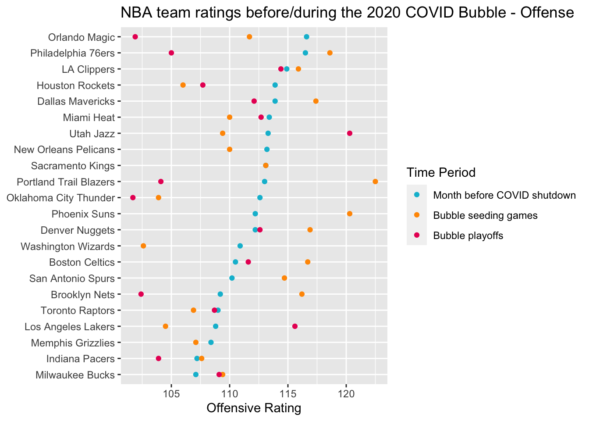
5.1.3 Defense
However, looking at the defensive performance, teams mostly did slightly worse or about as well as they had been before the bubble. So, the bubble potentially had a slight negative effect on team defense. Some teams actually did better than before – the Suns and Thunder stood out with major improvement in their seeding games, but these swings were much smaller than the largest negative swings.
Note that a lower Defensive rating means better defensive play. The X-scale has been flipped to allow for easier comparison with Offensive and Net ratings.
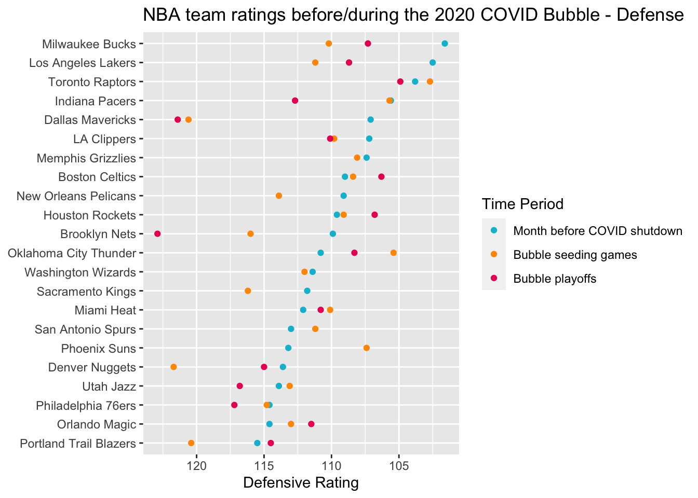
5.1.4 Overall
When combining the two to find the Net rating, the overall negative to neutral impact on defense is enough to swing overall performance in that direction. It is easy to see a large number of dots to the wall of the blue dots formed by ratings month before. In other words, overall performance for most teams looks worse or as good as before the Bubble. There does not appear to be any relationship in this change to performance before the Bubble, i.e. teams were impacted regardless of their previous rating.
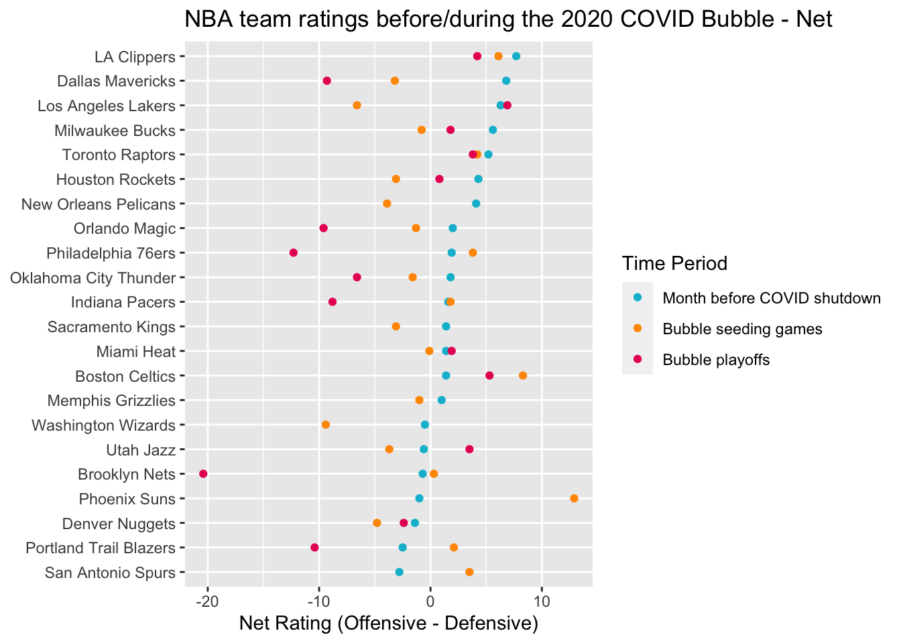
The slightly negative impact on defense/net rating was somewhat interesting, but we wanted to compare against a control. Perhaps a similar decrease in performance could be seen at the end of a regular season. So, we made similar charts for the 2018-19 season with the same teams. We chose three time periods that were similar to the Bubble analysis: a month before the last 8 games, the last 8 games, and the playoffs.
A similar amount of variance up and down can be seen in offense, and more in defense than the COVID season. The same decline in performance at the end of season can be see in the net ratings, although the changes looks even smaller than the COVID season. So, maybe the COVID season did not have much of an effect at all on net player performance at a team level, and the slight negative changes at the end of a season are more related to something else. Either way, the change in performance overall is not large and varies too much from team to team to really suggest a strong relationship.
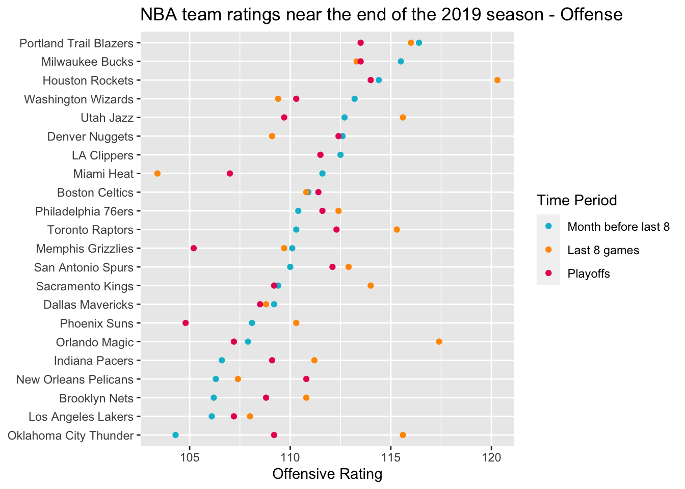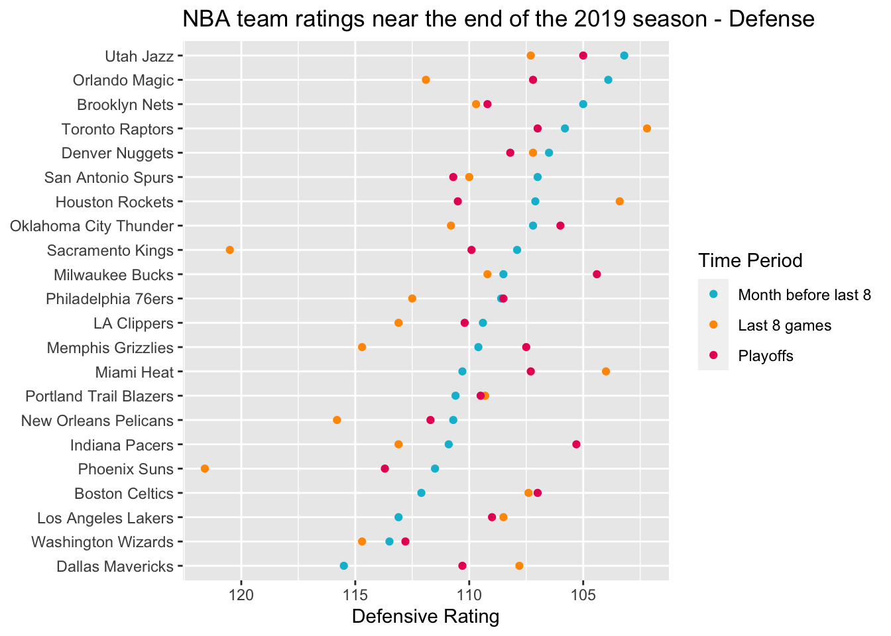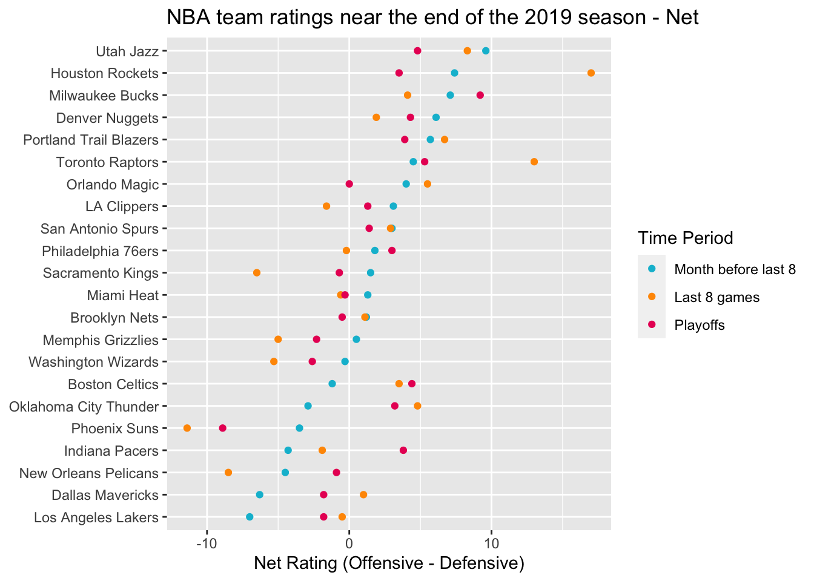
5.1.5 Players
If the COVID Bubble did not impact team performance, what about COVID itself? A number of specific players were reported to have contracted the virus during the suspension of the season. Most of these players eventually came back to play in the Bubble. We tried to see if this had any kind of lasting impact, regardless of severity of symptoms.
A quick search let us find the complete list of confirmed players that got COVID and when it was reported that they did. We filtered player data based on these names and sorted them based on when it was reported. We thought that given more time to recover, the greater chance that there was no impact on their performance. On the left was the first reported case in March, on the right was the most recent case in August, only two months from the start of the bubble.
The chart shows that all but 5 players did worse than before the shutdown, and thus before they contracted COVID. Furthermore, 3 of the players that outperformed after the restart were on the far left. Rudy Gobert, Donovan Mitchell, and Marcus Smart were all reported to have gotten the virus in March, giving 7 months for recovery. On the far right, we can see Mo Bamba take an absolute nosedive on his return. Looking a further into this, it seems that his symptoms were long lasting, even past the end of the season. Although the sample is small, this suggests that COVID has a generally negative effect even past the time that players are cleared to play. Comparing the results to player performance from the previous year reinforces this, as there does not seem to be any sort of end of season slump trend among the majority of players.
Note: not every player that contracted COVID and played in the Bubble had game data from near the end of the previous season. These names were intentionally left in to make comparison between both graphs more convenient.
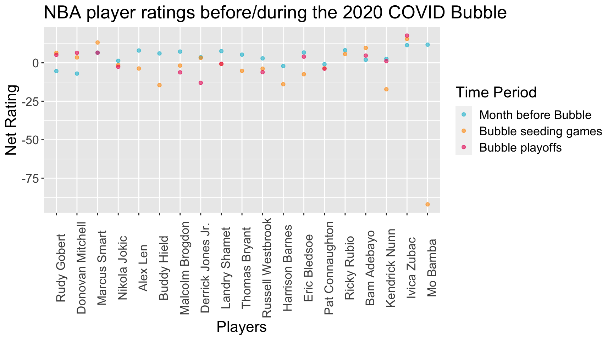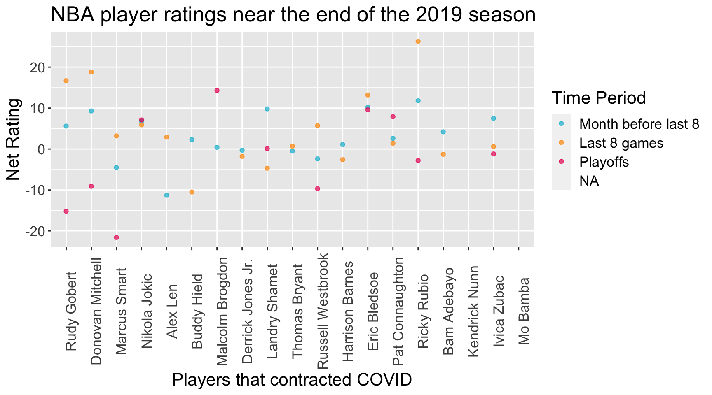
5.2 Kobe Bryant Demise Effect
5.2.1 Approach
We followed a 3 step approach to analyze the effect Kobe Bryant’s death had on the NBA teams and players.
We saw the difference in every individual team’s performance before and after after 26th of January (the date Kobe Bryant passed away).
Teams that showed a stark difference in performance were selected, and their performance over the years was observed, so as to check if the dip in performance was due to Bryant’s death or due to a typical January slump.
We selected a list of current NBA players who are known to be good friends of Kobe Bryant, and analyzed how the event affected their performance at the court.
Before Kobe Bryant’s death : We chose this period to be three weeks before Kobe’s death, and obtained team/player statistics for the given time frame. Using data before the chosen time span doesn’t make sense because we are concerned with the current form of the team/player, and doing so would not give us accurate results.
After Kobe Bryant’s death : We chose this period to be two weeks before Kobe’s death, and obtained team/player statistics for the given time frame. Using data after the chosen time span doesn’t make sense because we are concerned with the current form of the team/player, and doing so would not give us accurate results.
Note: For visualization purposes, we harnessed the Net Rating parameter (netrtg). The net rating includes the offense/defense ratings and it’s formula is different for different player positions/styles.
5.2.2 Team Performance Analysis
We compared the net rating of every team before and after Bryant’s decease. As mentioned previously, we divided the dataframe accordingly for the top 15 and bottom 15 teams (division based on net rating score of the 2020 season).
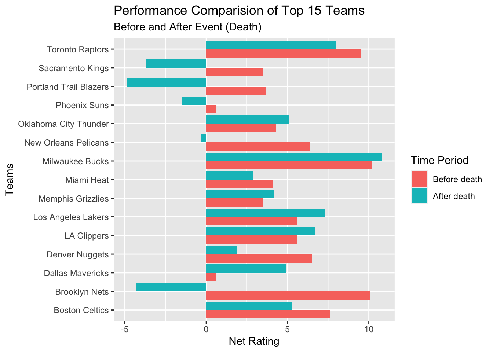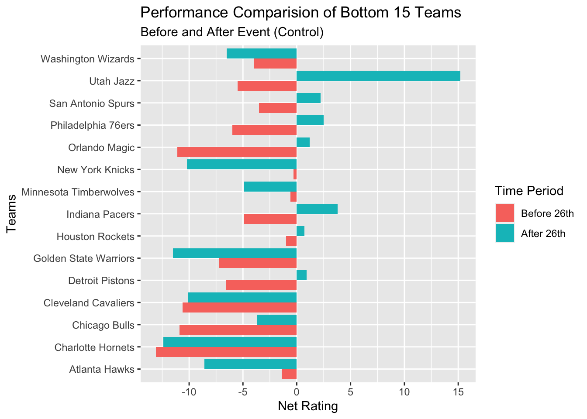
Differences in the net ratings were observed in every team. However, small fluctuations in net rating is normal. When we have a look at the two graphs, we notice that Brooklyn Nets show a significant improvement in their performance, while Utah jazz shows a significant slump in its performance. Other teams whose net rating declined after Kobe’s death were Lakers, Clippers, 76ers, Spurs, Bulls, Mavericks.
We then selected a subset of the above mentioned teams to see if the there is a pattern in the dwindling numbers over the years (e.g it is possible that the team didnt do well in the said time due to facing a tough opponent, or because their star player was injured etc.).
5.2.3 Selected Teams
The teams that were chosen for further analysis are as follows:
Utah Jazz : With a significant performance decline, it is obvious that something could be wrong with the Jazz in the time period.
Los Angeles Lakers: Apart from the decrease in net rating, it is imperative to further analyse the Lakers given that Kobe Bryant held a very prominent position in the Lakers fraternity.
LA Clippers: Apart from the slump, we chose to further analyse the clippers because they are a Los Angeles team, and many individuals in LA were devastated by the loss of Kobe Bryant.
Dallas Mavericks: The Mavericks were performing pretty well before 26th of January. However their net rating went to zero in the month of February.
Philadelphia 76ers: Kobe Bryant was born in Philadelphia. Given this fact, plus the deteriorating performance statistic, we chose to have a better look at the 76ers too.
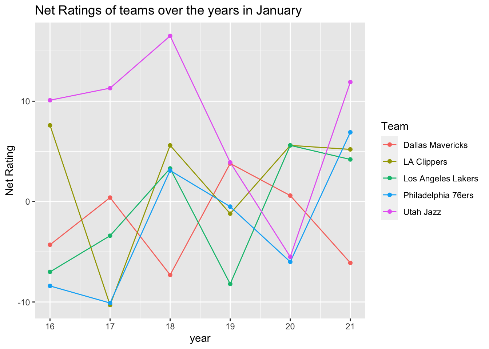
The 76ers show a slump in performance compared to their other seasons. This maybe due to the fact that the people of Philadelphia mourned Kobe’s loss (audience sentiment does play a role in boosting players’ morale).
The Utah Jazz to show a performance dip. This may or may not be due to the loss of Kobe Bryant, since the downtrend began in the previous season. Moreover, Bryant didn’t have much of an association with the Jazz (apart from the fact that he played his final Lakers game against them).
However, unexpectedly it turns out that the Lakers and Clippers weren’t really affected by the loss, since both teams saw their best Jan/Feb performance over 4 years in 2020. The mavericks did show deteriorating statistics, but one cannot conlude that it was because of Bryant because their 2021 season turns out to be worse.
5.2.4 Player Performance
Apart from a team sentiment, death of someone close affects a specific person more than the entire group. Hence, we decided to have a look at the players who were close to Kobe, and then saw if his death affected their performance.
The list of players was obtained from A celebrity entertainment website. The players obtained were ‘Carmelo Anthony’,‘LeBron James’,‘Anthony Davis’,‘Trae Young’,‘Kevin Durant’,‘Stephen Curry’ and ‘Chris Paul’. However, Steph Curry and Kevin Durant did not play during this period in 2020 so they were omitted. Trae Young and Anthony Davis were also the only two to have a control to compare to.
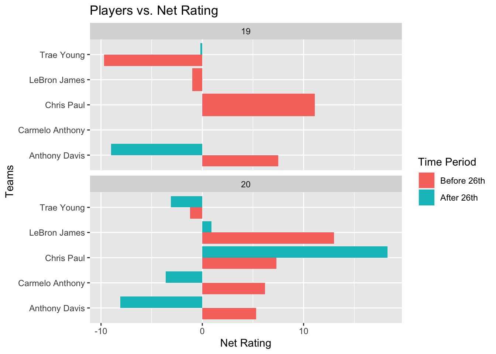
From the above graph, it could be said that the demise didn’t affect most players. Chris Paul is one such player who showed a drop in performance after the 26th of January. This maybe possible due to Kobe’s death because Chris Paul was really close to Bryant (both of them represented USA in the Olympics). Moreover, the sports media has highlighted their friendship a plenitude of times.
A few players like Lebron, have shown a significant performance improvement. This maybe because the death didn’t affect him as much as we thought it would. OR He was now the most sought after player in the Lakers, and had greater pressure of performance.
5.3 Injuries And Positions
5.3.1 Approach
Injuries are really common in basketball. We aim to find out if there is a correlation between injuries and player positions, and if there is any trend observed over the years. We obtain the data obtained from the data sources previously mentioned. Players may have been acquired from the injury list or relinquished from the injury list. We are interested in reliniquished list and hence work to ensure that relinquished field is not empty.
After necessary preprocessing and cleaning, we see if there is a correlation between the type of injury and player position for the year 2017. We then go on to see how the number of injuries has increased or decreased over time. Finally, we check if how different body parts are more prone to injury over the years.
5.3.2 Injured parts vs player position
The data generation for this step has been covered in the data cleaning section.
Note: we really struggled to get a better output for these labels! 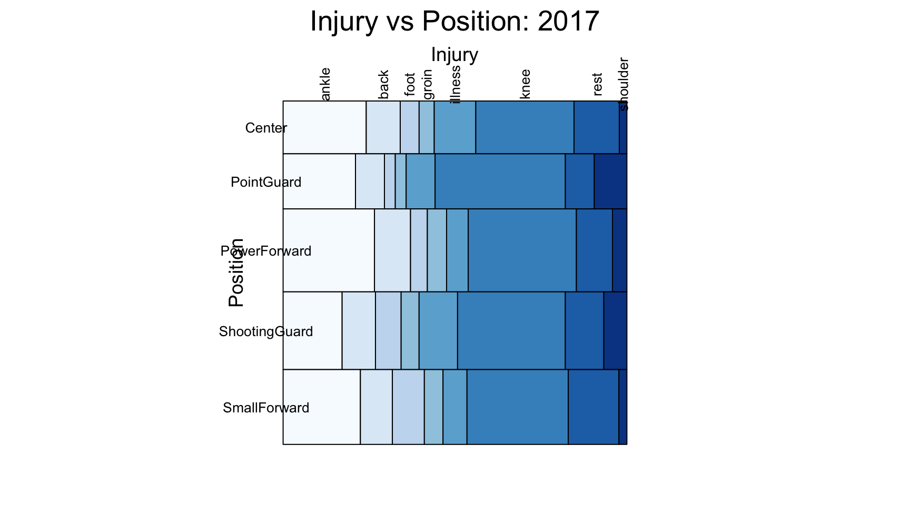
The above mosaic plot depicts the correlation between Injury types and Player Positions. It clearly demonstrates an association between the position and injury. From the plot, it can be obtained that almost all positions have similar proportion of injuries.
Knee and ankle injuries are really common in Basketball. This is due to the fact that falling from a height, jumping lay a phenomenal amount of stress on the lower part of your feet. It is noticed that the Guards (point guard specifically) face a great number of knee injuries, while the forwards face a greater number of ankle injuries.
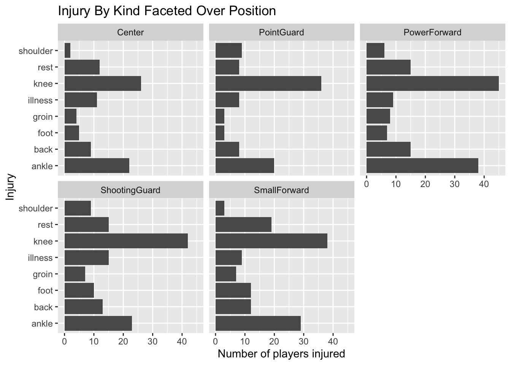
The above graph gives a clearer depiction of various injuries, faceted by position. The forwards see a greater proportion of knee injuries when compared to Guards and Centers.The guards on the other hand see a greater proportion of knee injuries when compared to forwards.
Thw word ‘rest’ denotes that the player was facing a mild injury/susceptible to injury and hence was rested. This could mean injury to body parts or could just be for tactical reasons
5.3.3 Injuries over the years
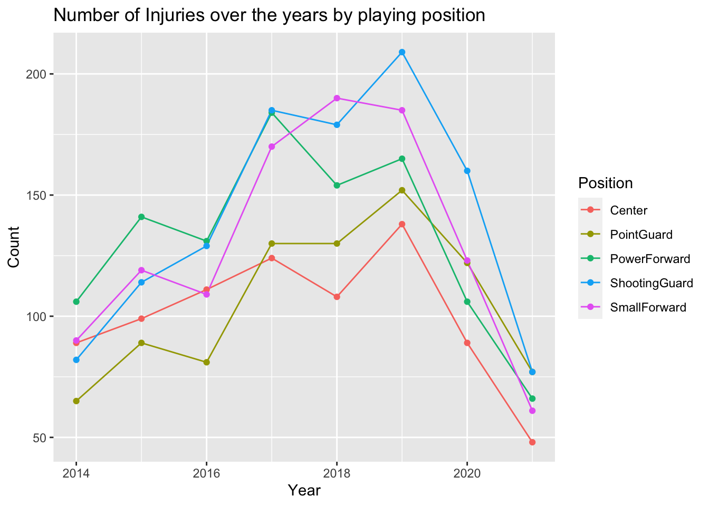
Clearly, the number of injuries have increased over time, except the 2020 and 2021 (due to lesser matches played). The shooting guard has seen a significant increase when compared to others, while the center continues to be a safe space.
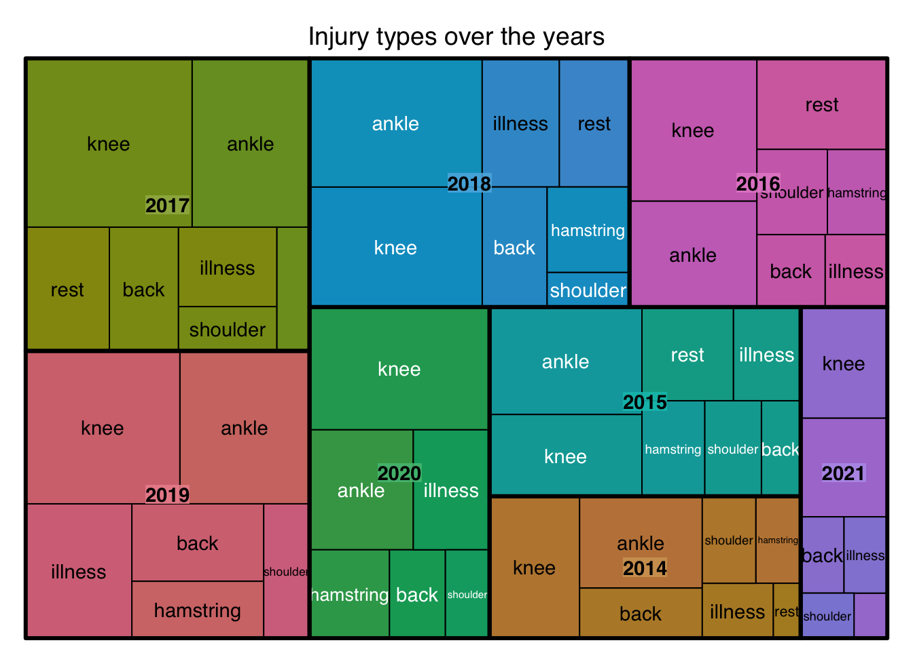
The aim of the treemap is to show which body parts are prone to injury over the years. There has been no significant change in the trend of the type of injuries. Knee and Ankle take up a lions share in each section. Back injuries and hamstring injuries also are consistently observed in every year.